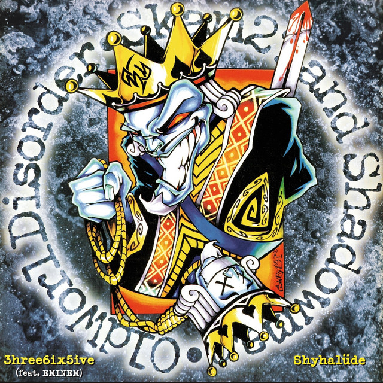 3hree6ix5ive (Instrumental) OldWorlDisorder feat. Eminem Produced by DJ Spinna Shyhalüde / 3hree6ix5ive [Single]
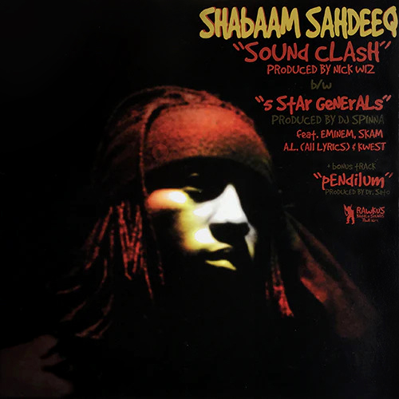 5 Star Generals (Instrumental) Shabaam Sahdeeq feat. Eminem, Skam, Kwest & A.L. Produced by DJ Spinna Sound Clash / 5 Star Generals [Single]
Just Don’t Give A Fuck (Instrumental) [EP Version] Eminem Produced by Denaun Porter Just Don’t Give A Fuck [Single]
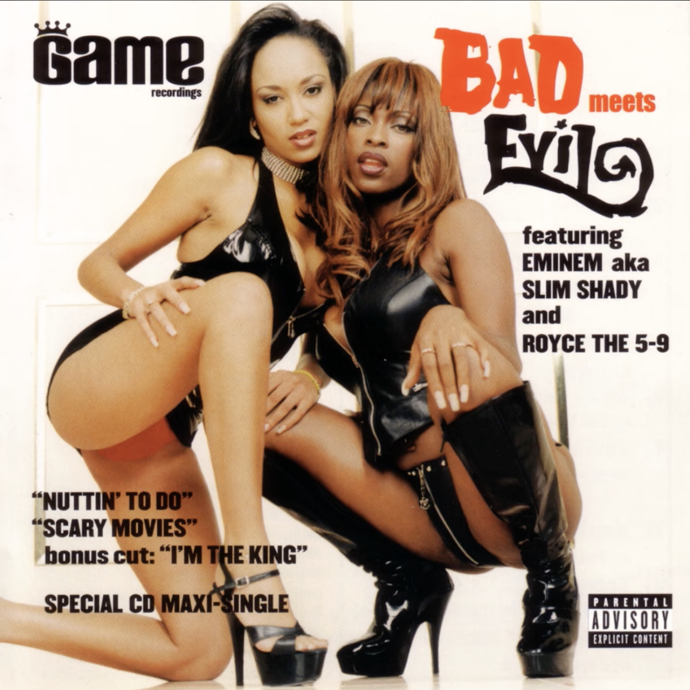 Nuttin’ To Do (Instrumental) Bad Meets Evil Produced by Reef Nuttin’ To Do / Scary Movies [Single]
Just Don’t Give A Fuck (Instrumental) [LP Version] Eminem Produced by F.B.T. The Slim Shady LP (Expanded Edition)
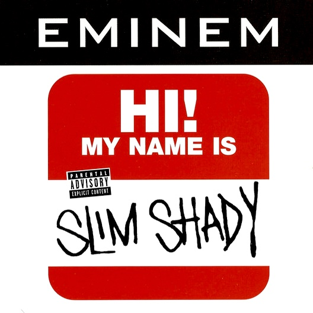 My Name Is (Instrumental) Eminem Produced by Dr. Dre The Slim Shady LP (Expanded Edition)
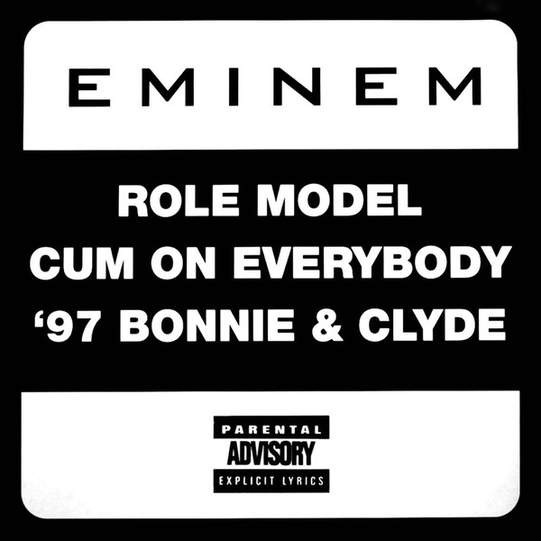 Role Model (Instrumental) Eminem Produced by Dr. Dre & Mel-Man Role Model [UK Promo Single]
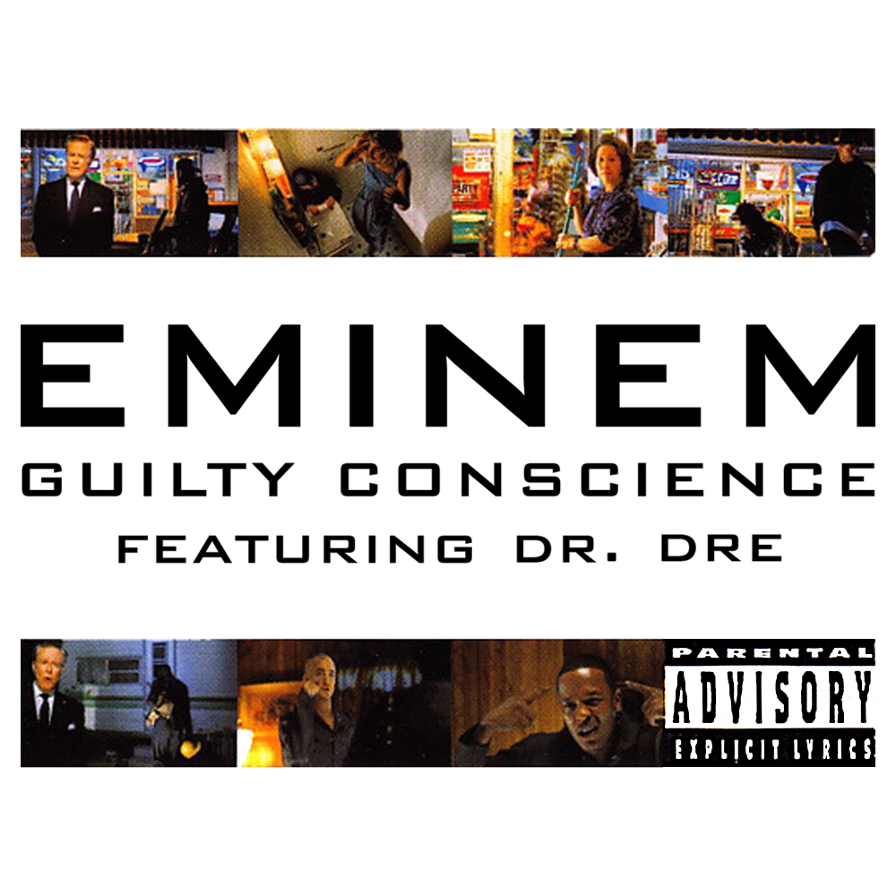 Guilty Conscience (Instrumental) Eminem Produced by Dr. Dre & Eminem The Slim Shady LP (Expanded Edition)
Macosa (Instrumental) Outsidaz feat. Eminem Produced by Pace One Macosa / Do It With A Passion [Promo Single]
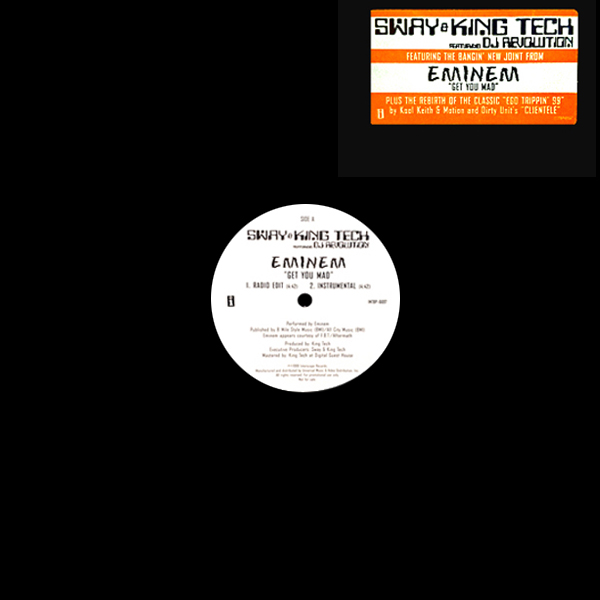 Get You Mad (Instrumental) Sway & King Tech feat. Eminem Produced by DJ Revolution & King Tech Get You Mad [Promo Single]
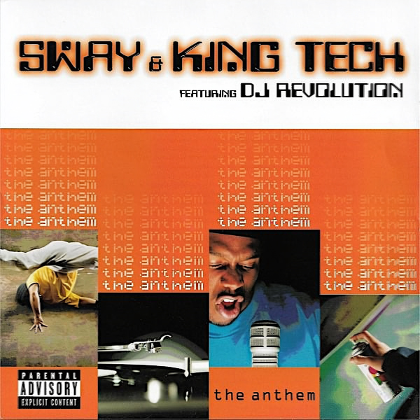 The Anthem (Instrumental) Sway & King Tech feat. RZA, Tech N9ne, Eminem, Xzibit, Pharoahe Monch, Kool G Rap, Jayo Felony, Chino XL & KRS-One Produced by King Tech The Anthem [Single]
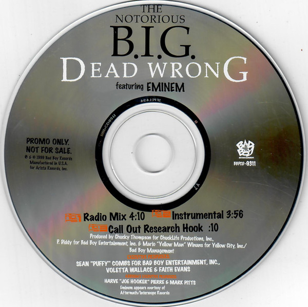 Dead Wrong (Instrumental) The Notorious B.I.G. feat. Eminem Produced by Mario Winans & Chucky Thompson Dead Wrong [Promo Single]
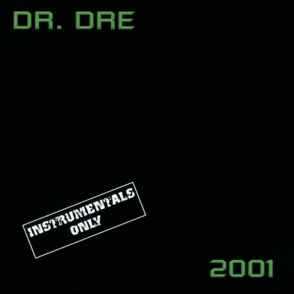 The Watcher (Instrumental) Dr. Dre Produced by Dr. Dre & Mel-Man 2001 (Instrumentals Only)
What’s The Difference (Instrumental) Dr. Dre feat. Eminem & Xzibit Produced by Dr. Dre & Mel-Man 2001 (Instrumentals Only)
Forgot About Dre (Instrumental) Dr. Dre feat. Eminem Produced by Dr. Dre & Mel-Man 2001 (Instrumentals Only)
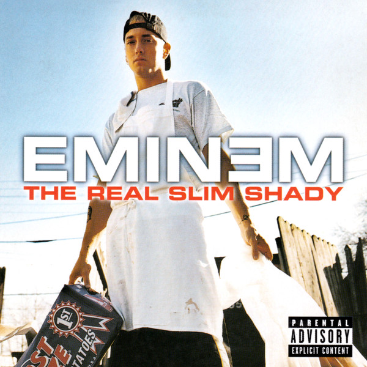 The Real Slim Shady (Instrumental) Eminem Produced by Dr. Dre & Mel-Man The Marshall Mathers LP (Tour Edition)
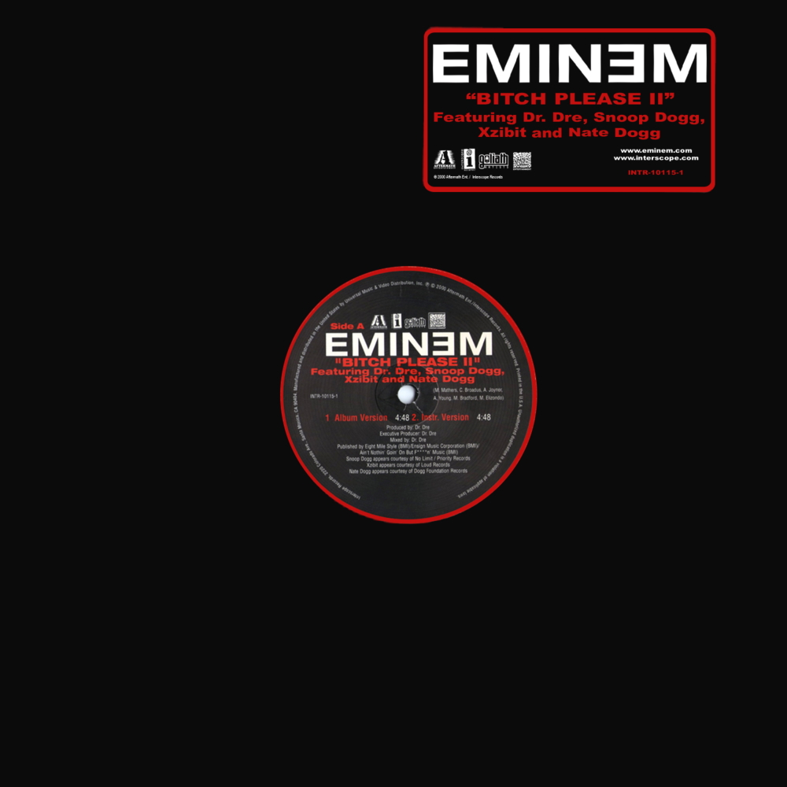 Bitch Please II (Instrumental) Eminem Produced by Dr. Dre Bitch Please II [Promo Single]
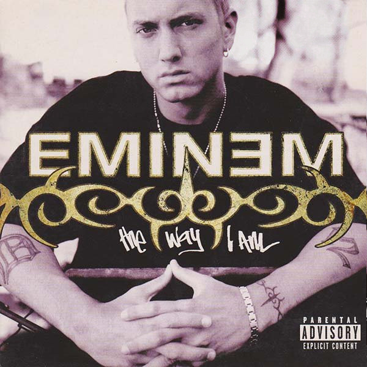 The Way I Am (Instrumental) Eminem Produced by Eminem The Marshall Mathers LP (Tour Edition)
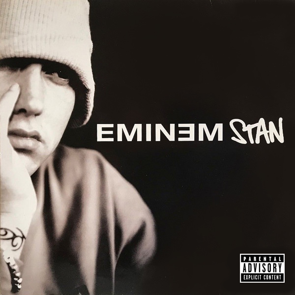 Stan (Instrumental) Eminem Produced by The 45 KingCo-Produced by Eminem The Marshall Mathers LP (Tour Edition)
Purple Pills (Instrumental) D12 Produced by EminemAdditional Production by Jeff Bass Devil’s Night (Expanded Edition)
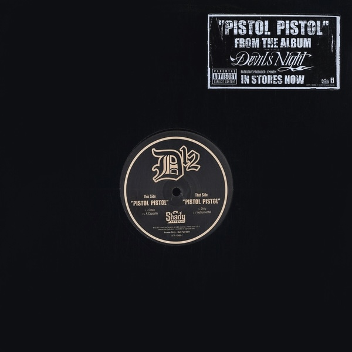 Pistol Pistol (Instrumental) D12 Produced by EminemAdditional Production by Denaun Porter Pistol Pistol [Promo Single]
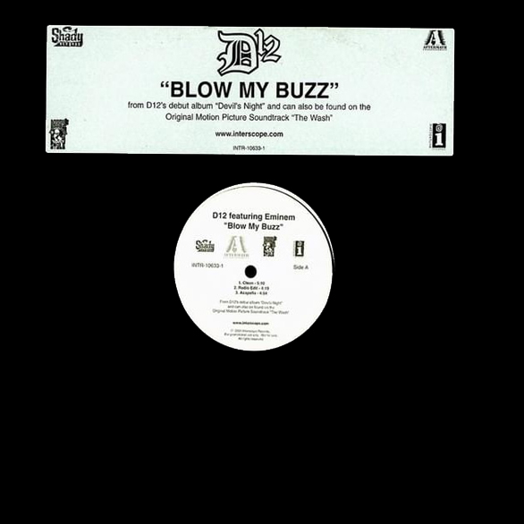 Blow My Buzz (Instrumental) D12 Produced by EminemCo-Produced by Jeff Bass Devil’s Night (Expanded Edition)
Without Me (Instrumental) Eminem Produced by EminemCo-Produced by Jeff BassAdditional Production by DJ Head The Eminem Show (Expanded Edition)
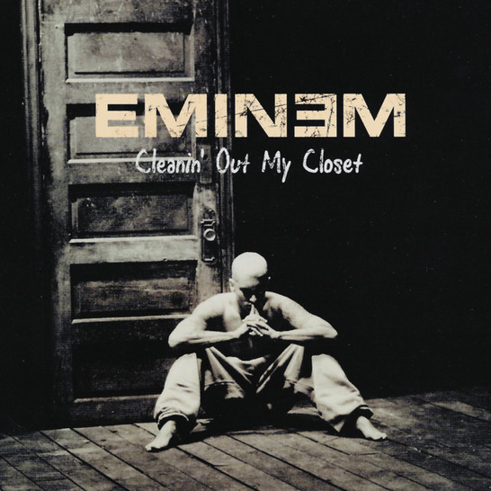 Cleanin’ Out My Closet (Instrumental) Eminem Produced by Eminem & Jeff Bass The Eminem Show (Expanded Edition)
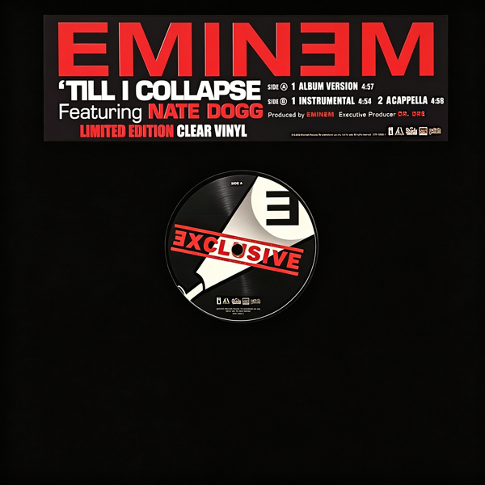 ’Till I Collapse (Instrumental) Eminem Produced by Eminem The Eminem Show (Expanded Edition)
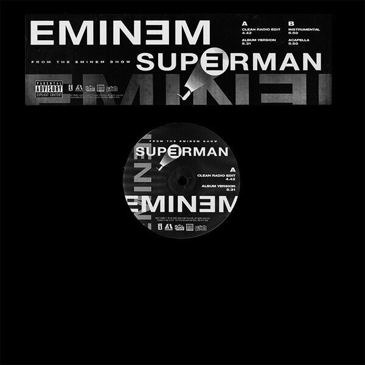 Superman (Instrumental) Eminem Produced by EminemAdditional Production by Jeff Bass The Eminem Show (Expanded Edition)
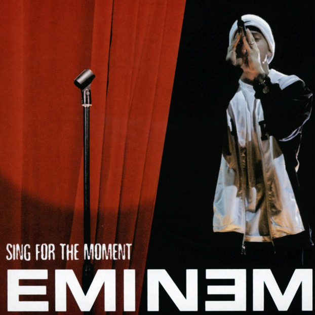 Sing For The Moment (Instrumental) Eminem Produced by EminemCo-Produced by Jeff Bass The Eminem Show (Expanded Edition)
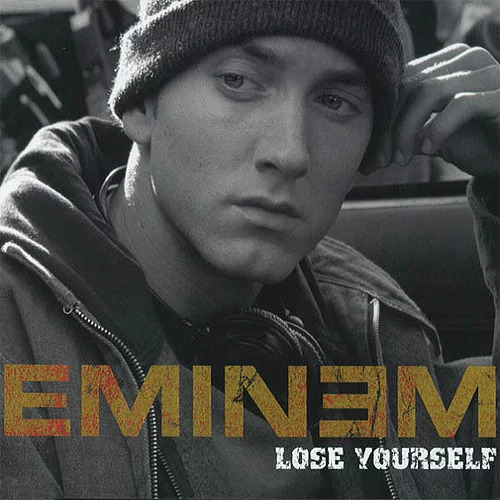 Lose Yourself (Instrumental) Eminem Produced by EminemAdditional Production by Jeff Bass 8 Mile (20th Anniversary Edition)
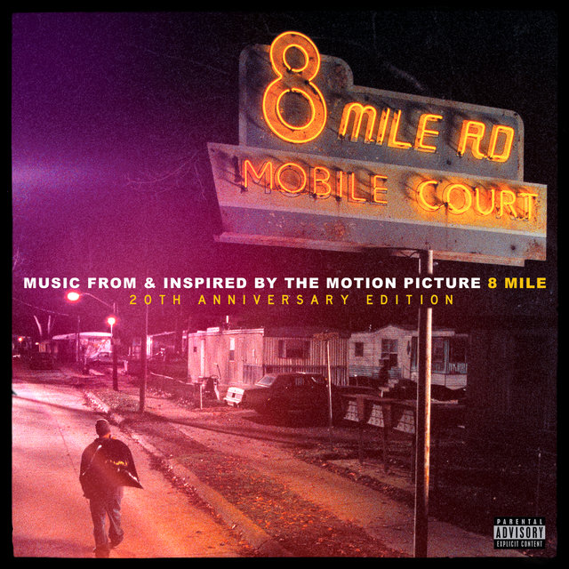 Love Me (Instrumental) Eminem, Obie Trice & 50 Cent Produced by EminemAdditional Production by Luis Resto 8 Mile (20th Anniversary Edition)
8 Mile (Instrumental) Eminem Produced by EminemAdditional Production by Luis Resto 8 Mile (20th Anniversary Edition)
8 Miles And Runnin’ (Instrumental) JAY-Z feat. Freeway Produced by Eminem 8 Mile (20th Anniversary Edition)
Rabbit Run (Instrumental) Eminem Produced by EminemAdditional Production by Luis Resto 8 Mile (20th Anniversary Edition)
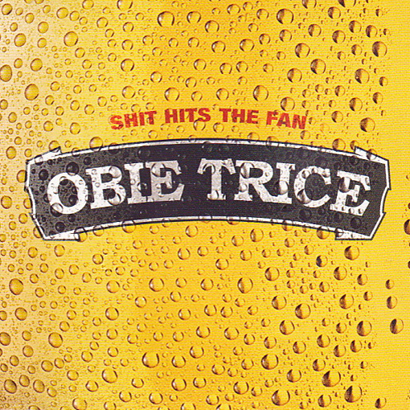 Shit Hits The Fan (Instrumental) Obie Trice feat. Dr. Dre Produced by Dr. Dre & Mike Elizondo Shit Hits The Fan [Promo Single]
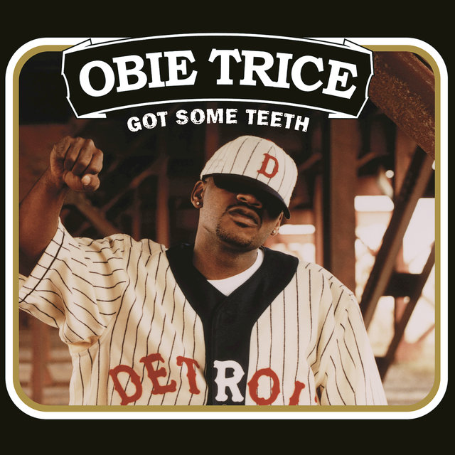 Got Some Teeth (Instrumental) Obie Trice Produced by EminemAdditional Production by Luis Resto Got Some Teeth [Single]
Runnin’ [Dying To Live] (Instrumental) 2Pac feat. The Notorious B.I.G. Produced by Eminem Runnin’ [Dying To Live] (Single)
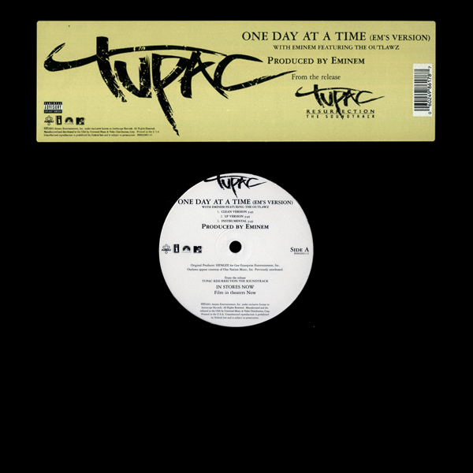 One Day At A Time [Em’s Version] (Instrumental) 2Pac with Eminem feat. Outlawz Produced by Eminem One Day At A Time (Em’s Version) [Single]
40 Oz. (Remix by Lil Jon) [Instrumental] D12 Produced by Lil Jon 40 Oz. (Remix by Lil Jon) [Promo Single]
American Psycho II (Instrumental) D12 Produced by Dr. Dre & Mike Elizondo American Psycho II [Promo Single]
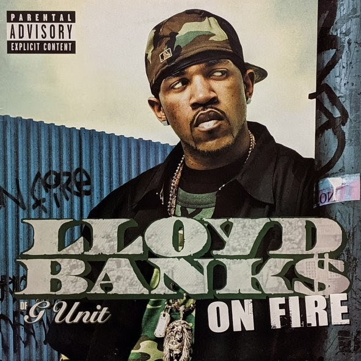 On Fire (Instrumental) Lloyd Banks Produced by K1 MilCo-Produced by EminemAdditional Production by Luis Resto On Fire [Single]
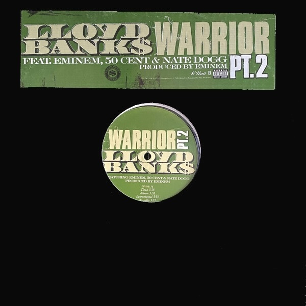 Warrior, Pt. 2 (Instrumental) Lloyd Banks feat. Eminem, 50 Cent & Nate Dogg Produced by Eminem Warrior, Pt. 2 [Promo Single]
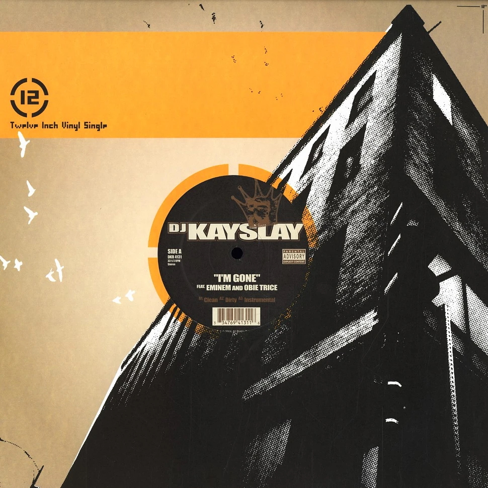 I’m Gone (Instrumental) DJ Kay Slay feat. Eminem & Obie Trice Produced by Eminem Additional Production by Luis Resto I’m Gone [Single]
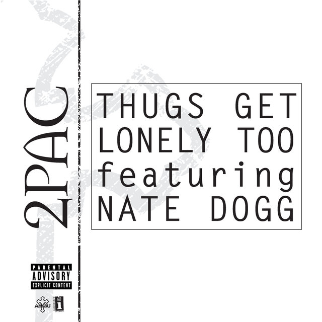 Thugs Get Lonely Too (Instrumental) 2Pac feat. Nate Dogg Produced by EminemAdditional Production by Luis Resto Thugs Get Lonely Too [Single]
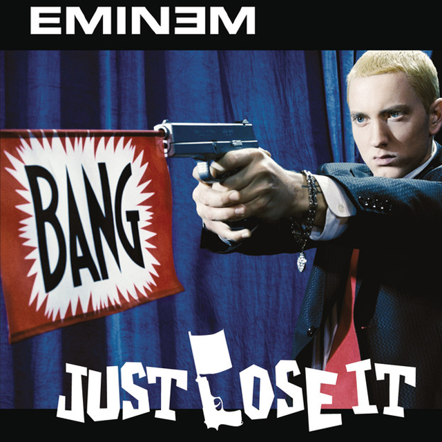 Just Lose It (Instrumental) Eminem Produced by Dr. Dre & Mike Elizondo Just Lose It [Single]
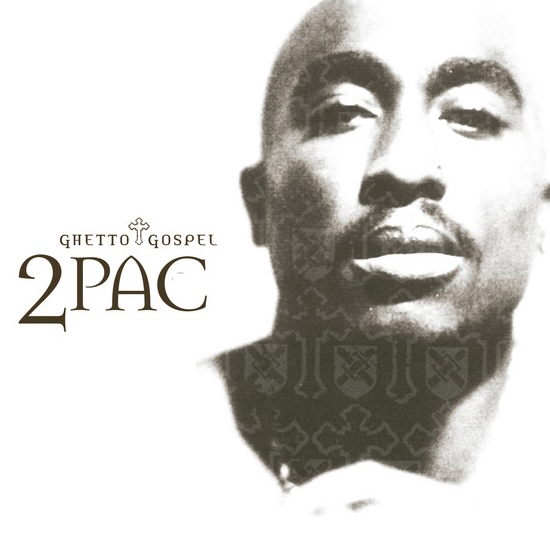 Ghetto Gospel (Instrumental) 2Pac Produced by EminemAdditional Production by Luis Resto Ghetto Gospel [Single]
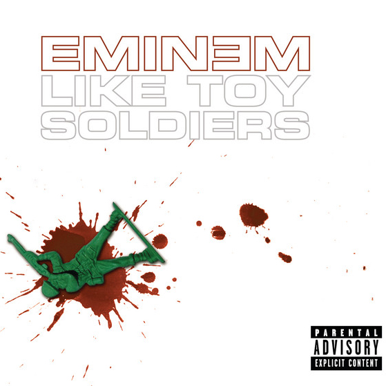 Like Toy Soldiers (Instrumental) Eminem Produced by EminemAdditional Production by Luis Resto Like Toy Soldiers [Single]
Mockingbird (Instrumental) Eminem Produced by EminemAdditional Production by Luis Resto Mockingbird [Single]
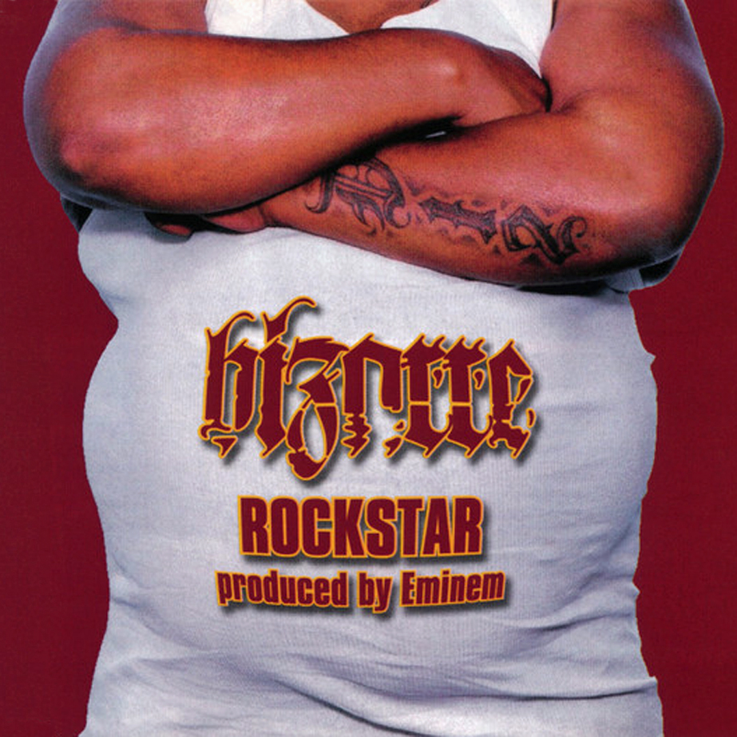 Rockstar (Instrumental) Bizarre Produced by EminemAdditional Production by Luis Resto Rockstar [Single]
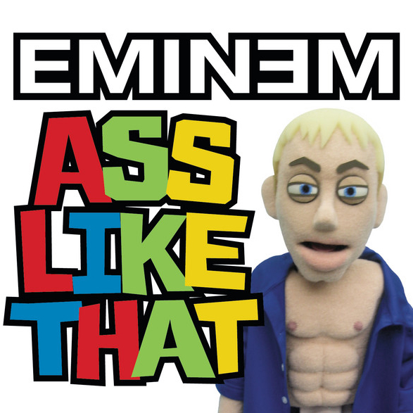 Ass Like That (Instrumental) Eminem Produced by Dr. Dre & Mike Elizondo Ass Like That [Single]
Welcome 2 Detroit (Instrumental) Trick Trick feat. Eminem Produced by EminemAdditional Production by Luis Resto Welcome 2 Detroit [Promo Single]
When I’m Gone (Instrumental) Eminem Produced by EminemAdditional Production by Luis Resto When I’m Gone [Single]
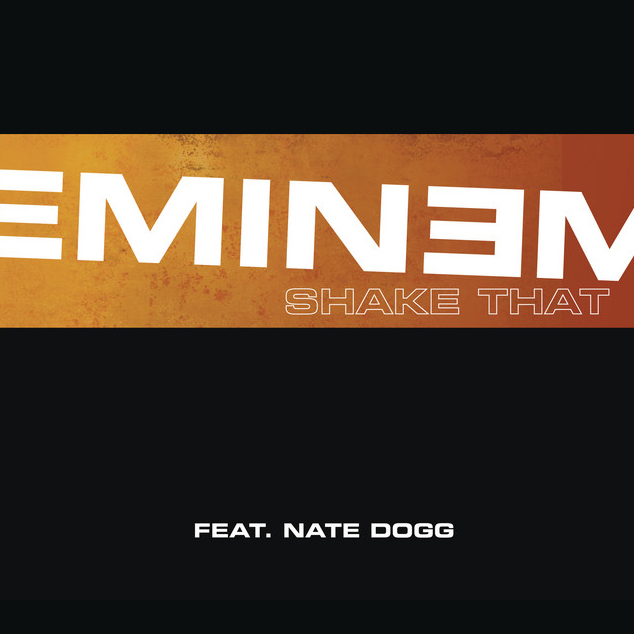 Shake That (Instrumental) Eminem Produced by EminemAdditional Production by Luis Resto Shake That [Promo Single]
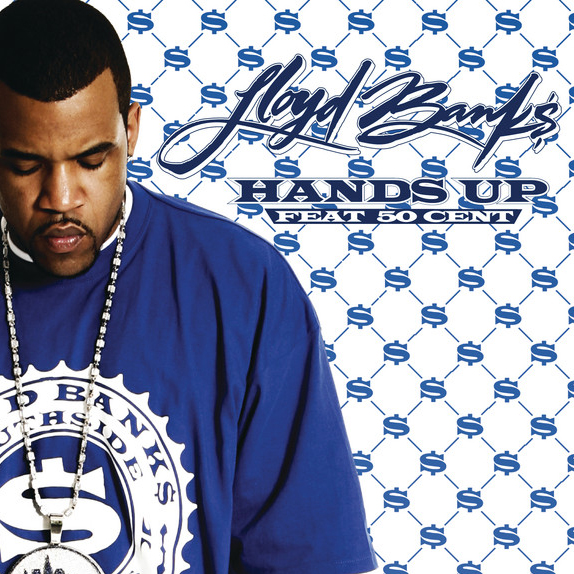 Hands Up (Instrumental) Lloyd Banks feat. 50 Cent Produced by Eminem, Chris Styles & Bang OutAdditional Production by Luis Resto Hands Up [Single]
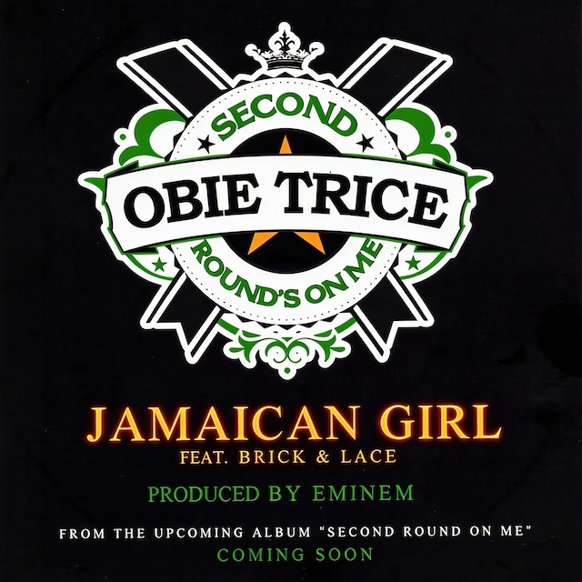 Jamaican Girl (Instrumental) Obie Trice feat. Brick & Lace Produced by Eminem Jamaican Girl [Single]
You Don’t Know (Instrumental) Eminem, 50 Cent, Lloyd Banks & Ca$his Produced by EminemAdditional Production by Luis Resto You Don’t Know [Single]
Jimmy Crack Corn (Vocal Remix) [Instrumental] Eminem Produced by EminemAdditional Production by Luis Resto Jimmy Crack Corn (Vocal Remix) [Promo Single]
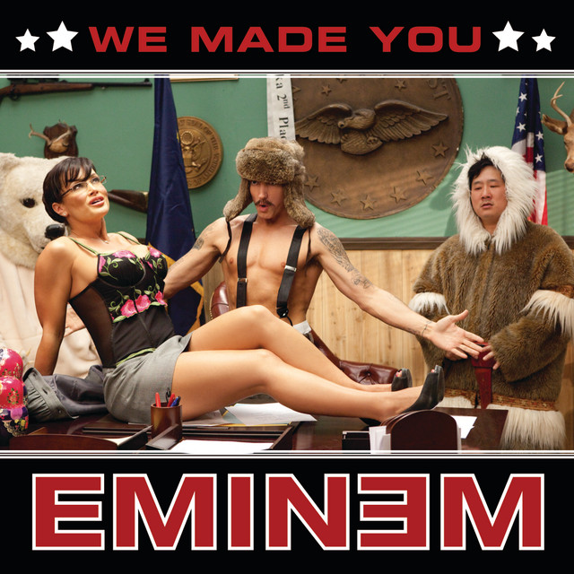 We Made You (Instrumental) Eminem Produced by Dr. Dre & EminemAdditional Production by Doc Ish We Made You [Single]
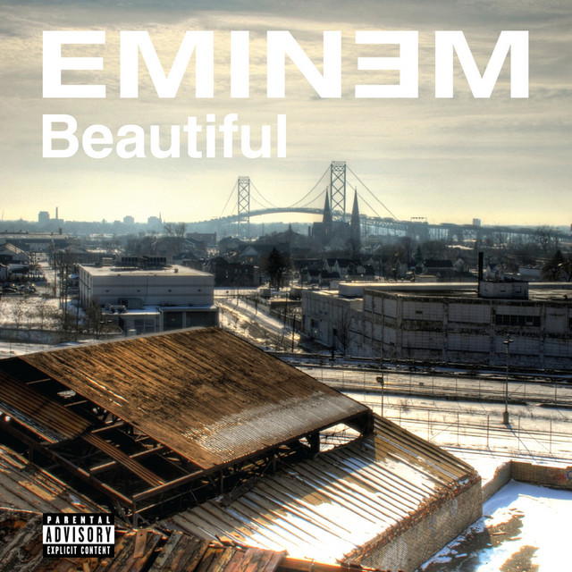 Beautiful (Instrumental) Eminem Produced by EminemCo-Produced by Jeff Bass Beautiful [Single]
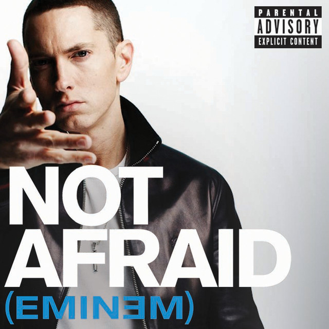 Not Afraid (Instrumental) Eminem Produced by Boi-1daAdditional Production by Eminem, Jordan Evans & Matthew Burnett Not Afraid [Single]
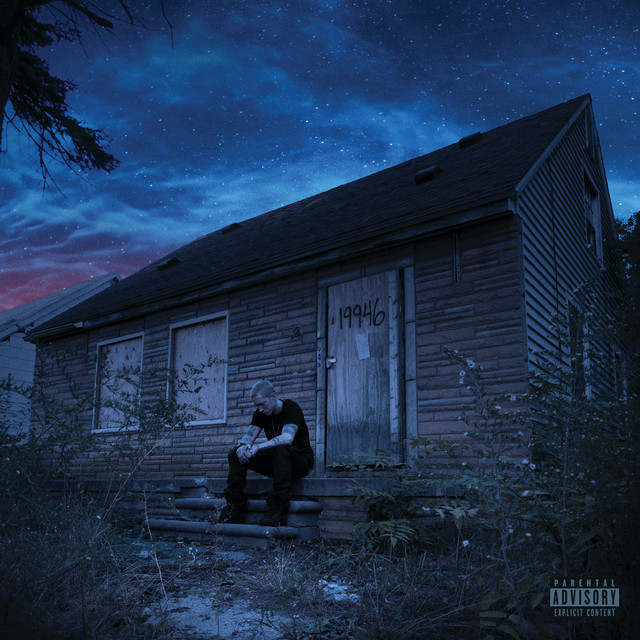 Survival (Instrumental) Eminem Produced by DJ Khalil The Marshall Mathers LP 2 (10th Anniversary Edition)
Berzerk (Instrumental) Eminem Produced by Rick Rubin The Marshall Mathers LP 2 (10th Anniversary Edition)
Rap God (Instrumental) Eminem Produced by DVLPCo-Produced by Filthy The Marshall Mathers LP 2 (10th Anniversary Edition)
The Monster (Instrumental) Eminem Produced by FrequencyCo-Produced by Aalias The Marshall Mathers LP 2 (10th Anniversary Edition)
Headlights (Instrumental) Eminem Produced by Emile Haynie & Jeff BhaskerAdditional Production by Eminem The Marshall Mathers LP 2 (10th Anniversary Edition)
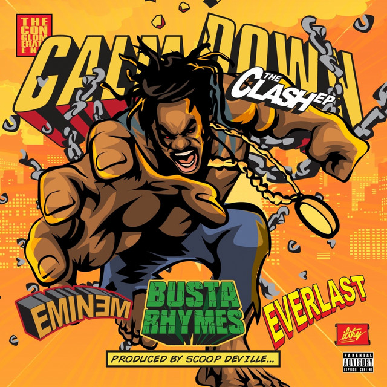 Calm Down (Instrumental) Busta Rhymes feat. Eminem Produced by Scoop DevilleAdditional Production by Eminem Calm Down: The Clash EP 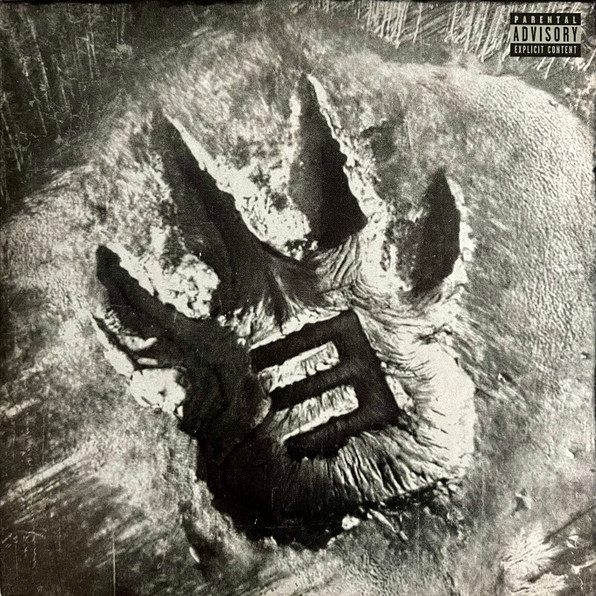 Godzilla (Instrumental) Eminem Produced by Royce Da 5’9“ & EminemAdditional Production by Luis Resto Godzilla [Single]
 Calm Down (Instrumental) Busta Rhymes feat. Eminem Produced by Scoop DevilleAdditional Production by Eminem Calm Down: The Clash EP